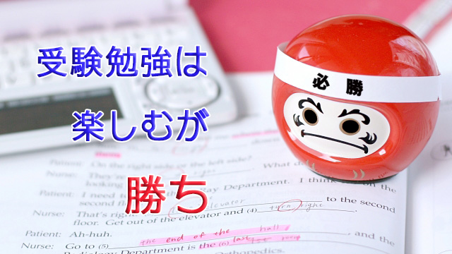

いよいよ師走に入り受験シーズンが近づいてきた。中学受験、高校受験そして大学受験と受験する子どもたちだけでなく、親や教師そして我々のような受験指導の専門家―要するに塾関係者―も慌ただしくなる季節だ。
私のようにとうに引退した元塾講師でさえも何かと忙しくなる。現に昨日、今日と私は２日連続で都内と近県の私立高校での受験生向けメンタル講座に駆り出された。
受験生への「心がまえ」について話せということだった。長年受験指導してきた経験を買われてのことだろうが、正直私としては「合格の秘訣」のような話はあまりしたくなかった。目先の合格そのものよりも―もちろん受験生にとっては一大事だが―それより重要な節目をどう過ごしそれ以降の人生の充実にいかにつなげていくか大きな視点で話したかったのだ。
そういう意味では受験もひとつの良い機会となり得る。どんな機会だろうか。
それは自分を知ることに尽きる。受験はご存知のように精神的にも肉体的にもけっこう重圧がかかる。受験とはその重圧の中での孤独との戦いと言える。
一般に言われるように受験とは他者（他の受験生）との戦いや競争ではない。自己の内面すなわち自分の弱さと強さ、難局といかに向き合い克服し乗り越えるかが問われる内的成長の旅なのだ。そしてこれは決して苦しいだけの旅ではないということ。
その旅のプロセスには多くの気づきや、発見の喜びがあるからだ。勉強の真の面白さに気づくこともそのうちの一つだ。
人間はなかなか追い込まれないと真剣に物事に向き合わない。受験勉強がきっかけで勉強の意義に目覚めることも実はよくあることだ。
今日も講座中に「いま楽しいと感じている人は？」と生徒たちに訊いてみたが意外にもけっこうな人数が手を挙げた。うち一人に当ててみるとこんな答えが返ってきた。
「何か新しいことが分かってきてワクワクしています」どんな感覚か突っ込むと彼女は「何というか宇宙が広がっていくような…」と言う。宇宙という言葉に教室から笑い声が上がったが私は感動した。
彼女が何を言いたいかよく分かったからだ。真剣に「勉強」に向き合ううちに、集中力が研ぎ澄まされ今までバラバラだった知識が統合され一つの世界を形づくる。
それは世界が広がる感じだ。
その視野の拡大を彼女は「宇宙が広がっていく」と独特の表現で語ったのだ。
多くの人は受験勉強を入試があるから仕方ないと義務感でやっている。それは確かにそうなのだが、本当にのめり込むと眠っていた知的好奇心が刺激され興味、面白さが浮き上がる。それは新しい世界観を得た喜びなのだ。
勉強はつまらないものという思い込みがはずれた瞬間である。それは「合格のため」という目的さえ忘れさせてしまう。そうなると受験勉強が受験（のための）勉強でなくなり、純粋に勉強を楽しむ瞬間に変わる。
不思議なことに（実は不思議ではないのだが）こうなるとたいてい合格してしまうから面白い。
何でもそうだが楽しんでやる奴には敵わないというのは真理だ。
「それが難しいのだ」と言う人にはこう答えるしかない。勉強に限らず仕事でも何でも義務感だけでやっているからモノにならない。あるいは目先の損得だけ考えるから味気ないのだ。たとえつまらないように見えることでもいかに楽しくやれるか、そのための創意工夫を惜しまない者が真の成功者になるのではないか。
何だかお説教臭い話になってしまった。
要するに私が伝えたかったのは、受験勉強をきっかけに勉強それ自体の楽しさに気づいて欲しい。なぜなら勉強は試験が終わったら「終了」ではない。人間はいくつになっても学び続ける姿勢が必要だ。その姿勢が人生の質を決定づけるということ。
そしていま目の前にある難局としっかり向き合うこと。逃げないこと。勉強漬けになることで義務や目的を超えた「それ自体を楽しむ境地」に至るということ。
つまり私のメッセージは受験勉強を楽しめということだ。これが合格の秘訣といえば秘訣といえる。
私のメッセージが生徒たちにどう響いたかは分からない。それでも先の女子生徒のように少なからぬ者が、受験生であるいまの状況を楽しんでいると分かったのは収穫だったと思う。
※学校から帰宅してこのブログを書き始めたとき、某大手新聞社から取材の申し込みが来ていた。「過熱する中学受験の是非について」コメントを頂きたいという。やはりこの時期世間の受験への関心も高まるのだなと改めて感じた。